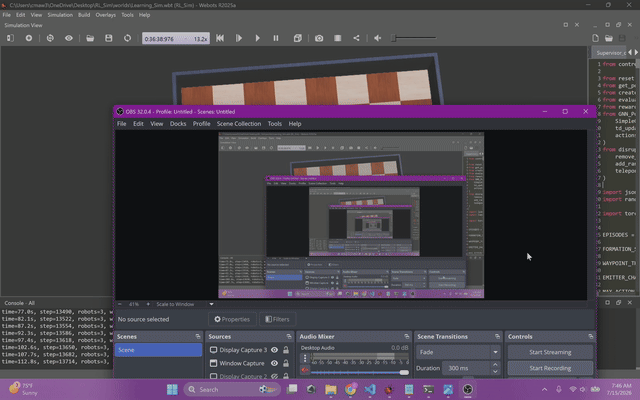
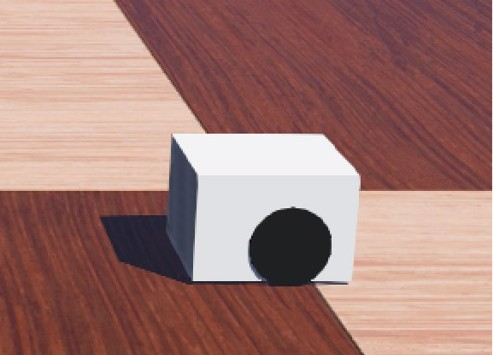
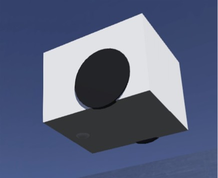

Multi-Robot Reinforcement Learning and Sim-to-Real Infrastructure
Ongoing Research · SMART Lab / Master's Thesis
My master's research investigates how multi-robot teams can maintain formation and recover from disruptions using reinforcement learning. The project involves developing a simulation-to-real framework with Hamster S robots, providing a platform for training coordination policies in simulation and evaluating their behavior on physical hardware.
Simulation environment
I developed a multi-robot environment in Webots to support training and repeatable experiments. Robot starting positions and navigation targets can be randomized between episodes, while the number of participating robots can be varied to study different team configurations. This flexibility allows coordination policies to be evaluated beyond a single predefined scenario.

Robot modeling
To support eventual deployment on physical robots, I created custom Hamster S models using measurements of the actual hardware. Their geometry and differential-drive motion are represented in Webots, allowing controllers to be developed with the physical platform's movement constraints in mind. These models also provide a consistent basis for comparing behavior between simulation and real-world experiments.


Learning-based formation control
The learning framework is designed to support graph-based reinforcement learning, where robots are represented as nodes and their relationships are used to inform control decisions. Training takes place over repeated episodes, with configurable reward functions and network architectures for experimenting with different approaches.
A central question is whether learned policies can handle situations that challenge conventional formation controllers. For example, if a robot becomes immobilized or is unexpectedly displaced, the remaining robots may need to reorganize to restore coordination. I am particularly interested in whether policies trained across different team configurations can generalize to changes in team size without requiring a controller designed for each configuration.
Localization and physical integration
Testing these policies on real robots requires reliable position feedback. An overhead camera tracks ArUco markers attached to the Hamster S robots to estimate their positions and orientations. Camera calibration and lens undistortion help reduce measurement errors, while homography-based mapping relates image coordinates to positions in the physical arena.
This tracking system provides the foundation for transferring controllers from Webots to physical experiments. Improving localization reliability is an important part of this process, particularly when camera noise or missed detections affect the feedback available to the controller.
Evaluation plan
The planned experiments will compare learned policies with classical formation controllers under both normal and disrupted operating conditions. Of particular interest is how quickly a team can recover after losing a robot or experiencing an unexpected change in formation. Evaluation will also consider formation accuracy, collision avoidance, and performance across different team sizes. Physical testing will help determine how well behavior learned in simulation transfers to the real robots. The research is ongoing, and quantitative results are not yet available.